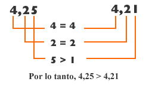

Para comparar números decimales puedes comparar las partes enteras de los números decimales entre sí y luego las cifras decimales según su posición, comenzando por la de mayor valor ( décimos), hasta que una de ellas sea de menor o mayor que la otra. Por ejemplo, comparar 4,25 y 4,21
Otro caso es cuando tenemos números decimales, con distintas cantidades de cifras decimales después de la coma.
Para comparar si un número decimal es mayor, menor o igual a otro podemos igualar con ceros las cifra decimales para que cada cantidad tenga el mismo número de cifras decimales después de la coma.
Ya igualadas las cifras procedemos a comparar y a ubicar en la posición que le corresponde.
En el siguiente ejemplo queremos saber Cuál número es mayor entre 0,2 y 0,85. Observa en la gráfica que lo primero que se hace es igualar el número de cifras decimales agregando ceros a la derecha, para luego poder compararlas.